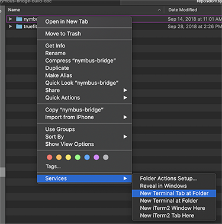

Build/Run The Bridge App From Your Machine via Github Repo
- Open a Terminal tab to the repo folder on your computer.
You can do this by right clicking the folder in your Finder, and selecting
Services->Open new terminal tab at folder.

- Check that you're on the 'devlop' branch
git branch
if not
git checkout develop
- Pull the latest changes from Github
git pull
-
Now you're ready to build and run.
- If there's been changes:
npm run build-semantic
- Start Electron app:
npm run dev